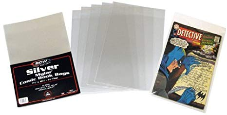

I have been collecting comics since I was 10 years old. I keep my collection stored in long boxes to keep them organized. Each comic is stored in a plastic bag to keep it dust-free. Over time my collection has grown to several boxes. I have titles ranging from The Amazing Spiderman to the Uncanny X-men.
When I was younger, I only had a few comic books, but I took care of them by putting them in plastic mylar bags. These are special bags made for comic books that keep them safe from outside air and elements. The top of the bag has a flap to seal the comic with a piece of tape, but some newer bags are self-sealing. Because I protected my comics in these bags when I was younger, they are now worth more money since they have maintained their good condition.
Once they are bagged, I like to store my comics in long boxes. These boxes ensure that my comics stay organized. I alphabetize them by title for easy reference. By boxing my comics I ensure that I will be able to find and read my comics for years to come.

I love collecting comics. I enjoy getting lost in the stories that continue from month to month with each newer issue. I like to keep my collection in good condition so that it maintains its value, but the main reason I collecting is for the enjoyment I get from reading the books and looking at the art.